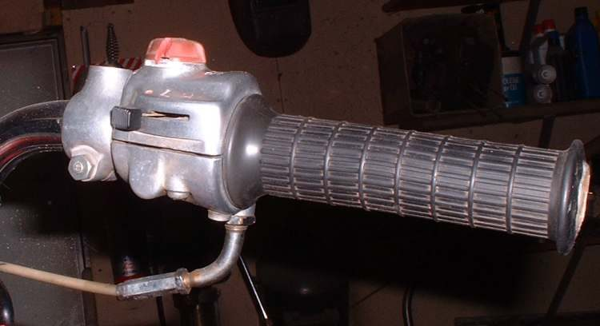
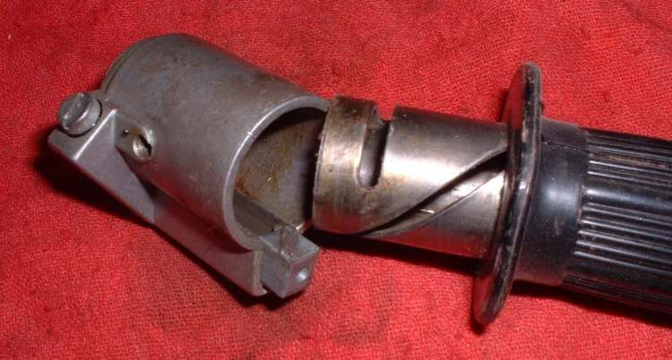
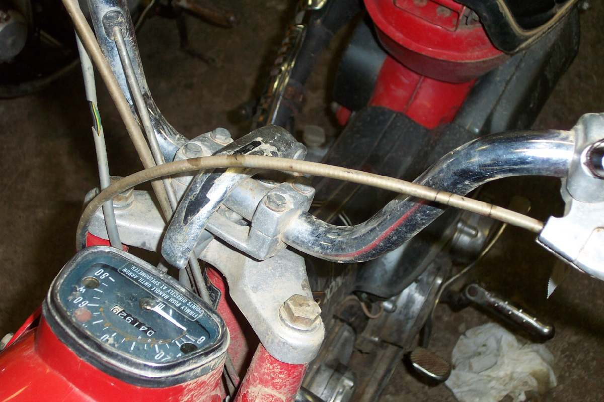

Most throttle cables fail at the twist grip end. Each time the grip turns, the wire bends where it leaves the grip, and broken strands start there. A cable that breaks again soon after replacement points to a cause at the grip: a sharp bend, a dry or dirty grip, or a cable that is too tight.
Is it safe to ride?
No. A frayed throttle cable can catch and hold the throttle open, or snap and leave you with no power. Replace it before riding.
Quick checks first
- Open the grip housing and look at the cable end for broken strands.
- Does the cable leave the housing in a gentle curve or a sharp bend?
- Turn the bars lock to lock: does the cable pull tight or kink at either side?
- Is it the right cable for the bike (length, ends, single or twin)?
Diagnose it step by step
1Are there broken strands near the cable end at the grip?
- Yes: replace the cable (Lubricate or replace the throttle cable, or Replace a twin throttle cable). Then go to step 2 to find why.
- No: check the engine end and the outer for cracks (A control cable is frayed or stiff).
2Does the cable enter the grip housing at a sharp angle, or has the housing been turned on the bar?
- Yes: set the housing to its original position (many have a locating pin or a mark). The cable must enter in a gentle curve.
- No: go to step 3.
3Is the grip stiff, dirty or dry with the cable unhooked?
- Yes: Strip, clean and lubricate the twist grip. A stiff grip makes the wire work harder at the bend.
- No: go to step 4.
4Does the cable pull tight or kink when the bars turn, or is the free play almost zero?
- Yes: reroute it in its guides and set free play (Adjust throttle free play).
- No: go to step 5.
5Is the outer cracked, or is the cable a cheap or wrong-length copy?
- Yes: fit a correct cable and oil it at each service (Lubricate control cables).
Causes, most likely first
| Cause | How to confirm | Fix |
|---|---|---|
| Dry cable end at the grip | Broken strands, no oil at the end | Replace and lubricate |
| Sharp bend at the grip | Housing turned, cable kinked at entry | Reposition the housing, gentle curve |
| Stiff or dirty grip | Grip hard to turn with cable off | Strip the grip |
| Cable too tight or misrouted | Idle rises at full lock | Adjust free play |
| Cracked outer | Water and dirt inside | Replace the cable |